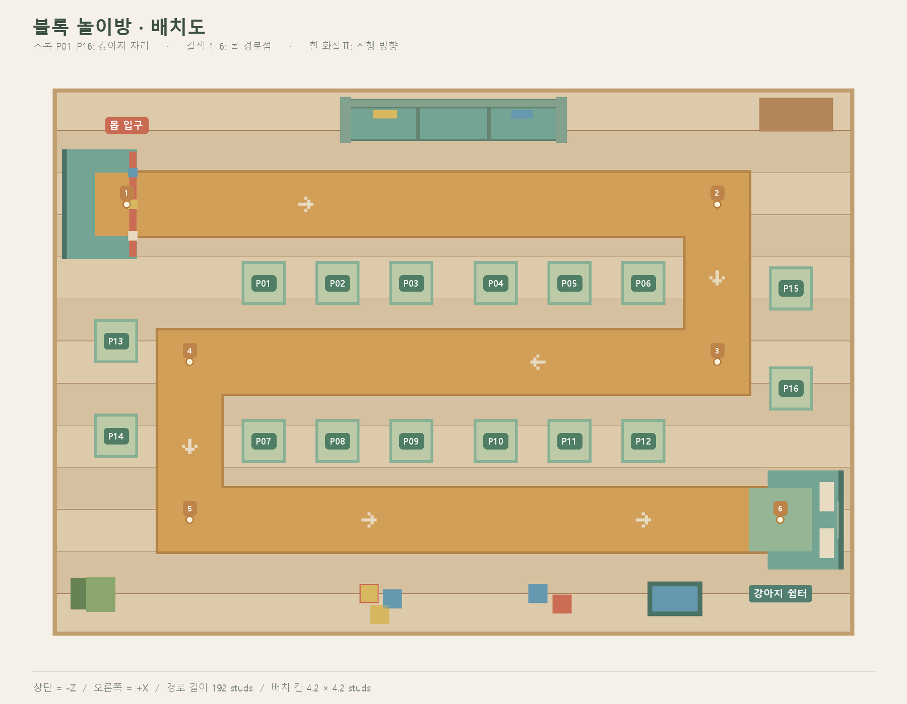
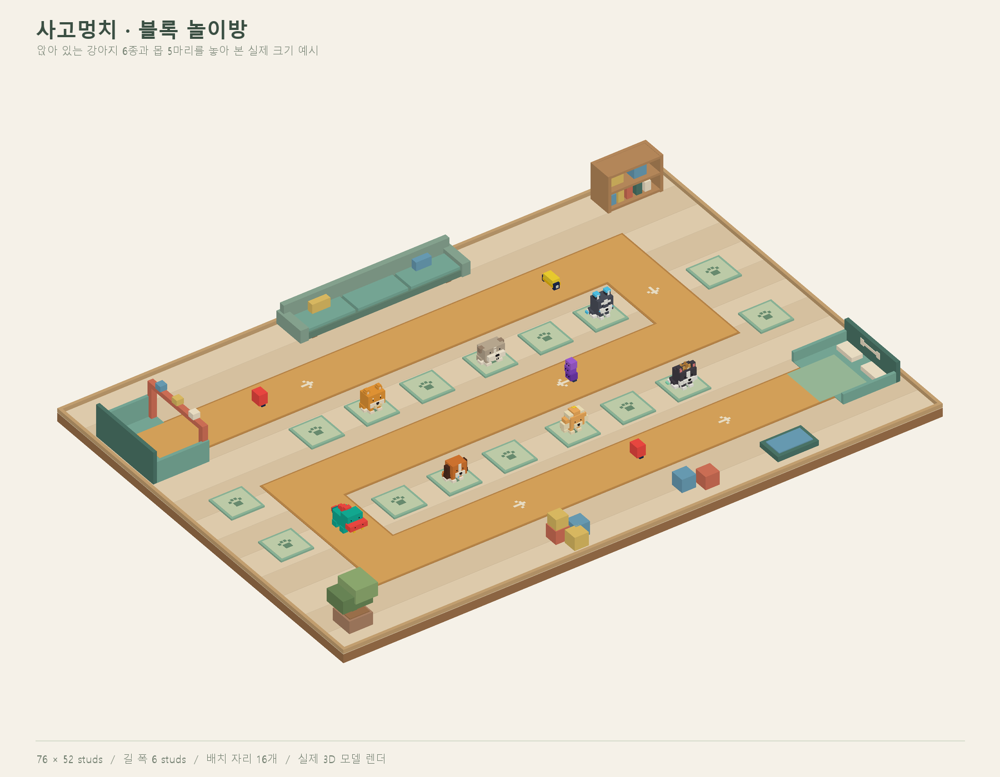

INTERACTIVE MAP
놀이방 둘러보기
드래그 회전 · 휠 확대 · 패드 선택
3D 맵을 준비하고 있어요.
길과 배치 자리 한눈에 보기

DOWNLOADS
제작 파일
맵만 받거나, 캐릭터 배치가 포함된 쇼케이스 버전을 선택할 수 있습니다.
PUPSTERS · BLOCK PLAYROOM
장난감 상자에서 밀려오는 몹을 막아라! 꺾인 S자 길을 따라 강아지 16마리를 배치하고, 길 끝의 쉼터를 지켜요.

INTERACTIVE MAP
드래그 회전 · 휠 확대 · 패드 선택
3D 맵을 준비하고 있어요.

DOWNLOADS
맵만 받거나, 캐릭터 배치가 포함된 쇼케이스 버전을 선택할 수 있습니다.